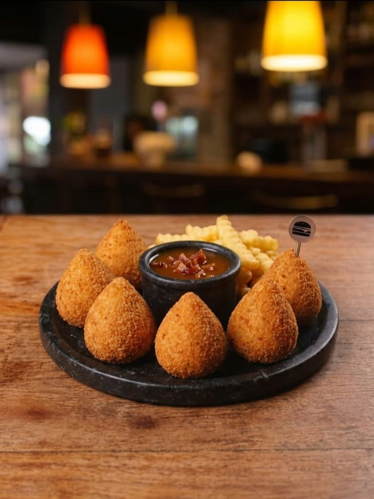
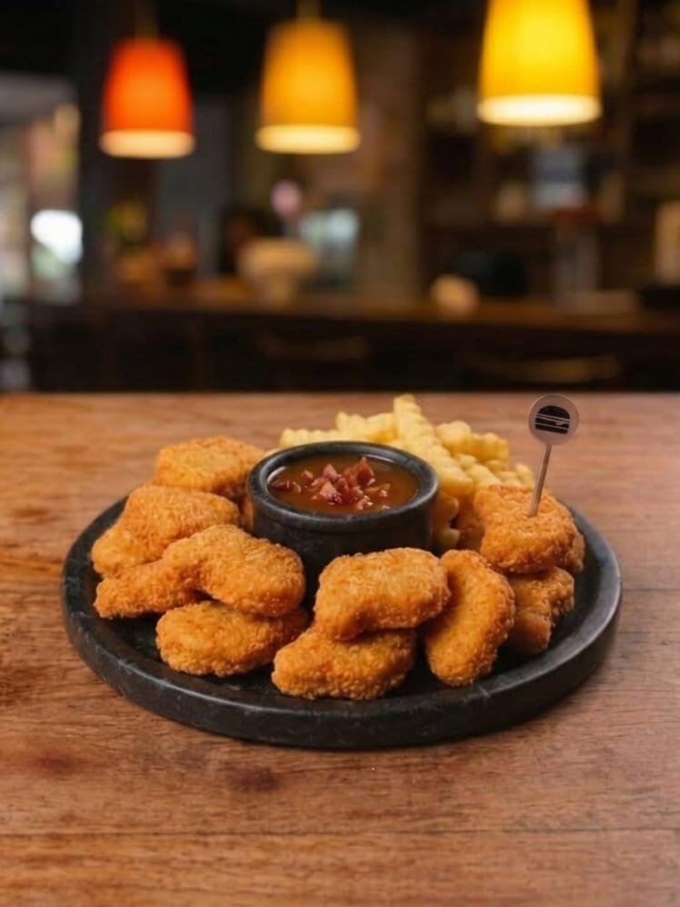
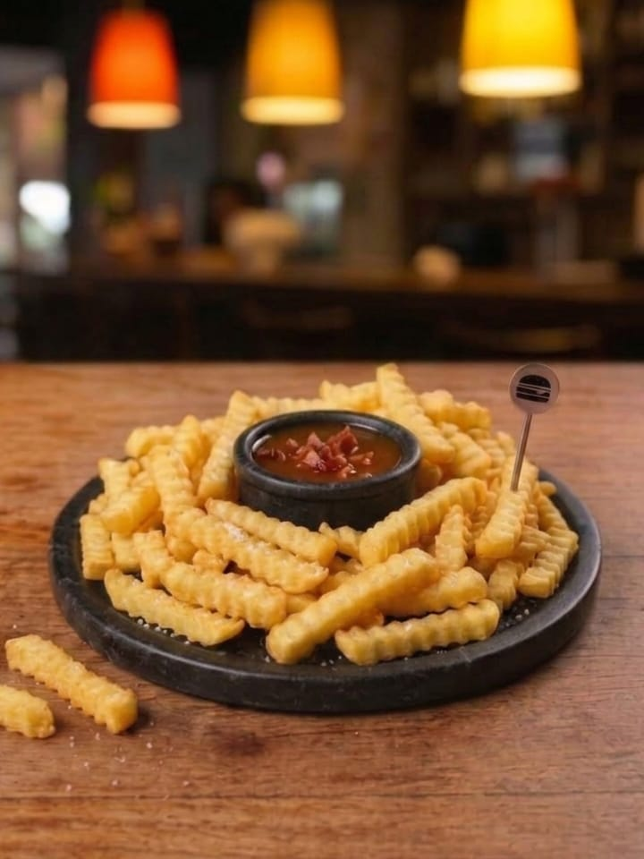

Porções

Coxinha Pulled 3 | 6 unidades


Batata Grande
Batata Pulled
Adicionais Batata
Bacon | Catupiry | Cheddar | Cream Cheese
Extras nos lanches
Burguer (Bovino | Frango | Linguiça)
Burguer (Queijo coalho)
Burguer (Salmão)
Bacon | Catupiry | Cheddar | Cream Cheese | Mussarela
Cebola Caramelizada ou empanada
Pimenta Jalapeño | Picles
Pulled Porck
Bebidas
Cervejas:
Heineken
Eisenbahn
Refrigerantes:
Coca-Cola
Coca- Cola Zero
Fanta Laranja
Fanta Uva
Sprite
Sprite Zero
Sucos:
Del Valle Uva
Del Valle Maracujá
Del Valle Pêssego
Pink Lemonade:
Frutas Vermelhas com Limão
Maça Verde com Limão